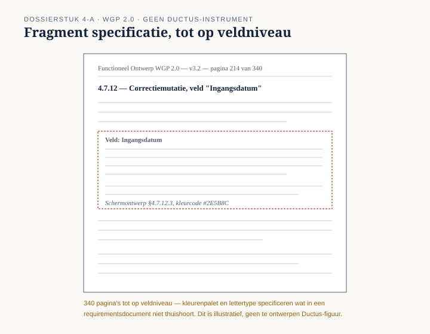

Deel 4 — Rollen en benaderingen; requirements versus ontwerp
Slidedeck · Ductus-cursus Business-analyse · niveau 1 · deel 4 van 30 · 28 slides
Slide 1 — Titel
Business-analyse — deel 4 Rollen en benaderingen; requirements versus ontwerp
Slide 2 — Terugblik
Deel 1: een instrument. Deel 2: een denkraam. Deel 3: een houding.
Vandaag: wie doet dit werk, volgens welke aanpak — en waar eindigt "wat nodig is" en begint "hoe het eruitziet"?
Slide 3 — "Dat doen we hier altijd zo"
"Waarom een lange specificatiefase, gevolgd door bouw in één geheel?"
"Eerlijk? Daar is nooit een besluit over genomen. Dat doen we hier altijd zo."
Slide 4 — Waar we het over gaan hebben
- Rollen: wie doet business-analyse, en waarom dat verschilt
- Een aanpak is een keuze, geen automatisme
- Requirements versus ontwerp
- Het benaderingsblad
- Bevinding B4 sluiten
Slide 5 — De rol volgt de aanpak
Voorspellend: analist en bouwer, twee mensen, twee momenten. Document eerst, dan overdracht.
Adaptief: analyse vloeit samen met andere rollen. Kleine porties, vlak voor het bouwen.
Slide 6 — Geen van beide is per definitie beter
De rol is een gevolg van de aanpak, niet andersom.
Ayla's rol bij WGP 2.0 werd automatisch ingevuld door een aanpak die nooit bewust gekozen is.
Slide 7 — Twee uitersten
Voorspellend — eerst volledig vastleggen, dan bouwen Adaptief — kleine stappen, tussentijds leren en bijsturen
De meeste veranderingen zitten ertussenin.
Slide 8 — Vijf situationele factoren
Bekendheid van de behoefte Stabiliteit van de context Kosten van achteraf bijsturen Beschikbaarheid van belanghebbenden Wat gebruikelijk en haalbaar is — als factor, geen vrijbrief
Slide 9 —

Schaal van voorspellend naar adaptief — vijf schuifknoppen
Slide 10 — Geen van deze vragen gesteld
Bij WGP 2.0 staat geen van de vijf factoren in de documentatie.
De aanpak stond al vast voordat de eerste vraag gesteld had kunnen worden.
Slide 11 — [Opdracht 2]
Wat zegt het kwaliteitshandboek van Meridiaan wél — en welke factoren ontbreken volledig?
Slide 12 — Het tweede probleem
Specificatie en ontwerp liepen door elkaar
Bevinding B4 is eigenlijk twee bevindingen in één.
Slide 13 — Requirement
Beschrijft wat nodig is. Zegt niets over de vorm van de oplossing.
Slide 14 — Ontwerp
Beschrijft hoe aan die behoefte wordt voldaan. Een concrete vormgeving, een technische keuze.
Slide 15 — De toets
Blijft deze zin waar als de oplossing morgen verandert?
Ja → requirement. Nee → ontwerp.
Slide 16 — Twee voorbeelden
"De werkgever kan een correctie doorgeven." → blijft waar → requirement
"Via een formulier met drie stappen, met bevestigingsscherm." → verandert bij een andere vormgeving → ontwerp
Slide 17 — Waarom vermenging schadelijk is
- Geen ruimte meer voor een betere oplossing
- Niemand kan later meer zien wat behoefte was en wat keuze
Slide 18 — 340 pagina's, tot op veldniveau

Kleurenpalet en lettertype: in een requirementsdocument.
Slide 19 — Grensgevallen bestaan
"Binnen één werkdag verwerkt" — requirement. "...door Uitvoering" — dat kleine zinsdeel is al ontwerp.
De toets geeft geen garantie. Wel een gewoonte om te stellen.
Slide 20 — [Opdracht 1]
Vier punten uit de specificatie. Requirement, ontwerp, of grensgeval?
Slide 21 — De werkvorm van dit deel
Het benaderingsblad
Deel A: de aanpak kiezen. Deel B: de laagtoets.
Slide 22 — Deel A
Scoor de vijf factoren. Bepaal een gemotiveerde positie op de schaal — niet per se een van de twee uitersten.
Slide 23 — Deel B
Neem elke eis. Pas de toets toe. Sorteer onder requirement of ontwerp. Voorlopig ontwerp: apart noteren, niet weggooien.
Slide 24 — Het veld dat het verschil maakt
Welke van de vijf factoren in deel A is nooit expliciet afgewogen, maar gewoon verondersteld?
Bij WGP 2.0: alle vijf.
Slide 25 —

Het benaderingsblad — deel A en deel B, met het afsluitende veld
Slide 26 — Het examen
Domein 3 — business-analyse invoeren en inrichten — 6% Aanpak kiezen met redenen · requirement versus ontwerp herkennen · gevolgen van vermenging benoemen
Slide 27 — B4 gesloten
Twee bevindingen in één, met dezelfde oorzaak: gewoonte in plaats van afweging. Een lange, ongekozen fase nodigt uit tot alvast ontwerpen — en dat bevestigt de aanpak die nooit gekozen werd.
Slide 28 — Volgende keer
Met een bewuste aanpak en een scherp onderscheid kun je nu het eerste kernconcept echt gaan uitwerken.
Deel 5: verandering — scope en impact. Sluit B5.